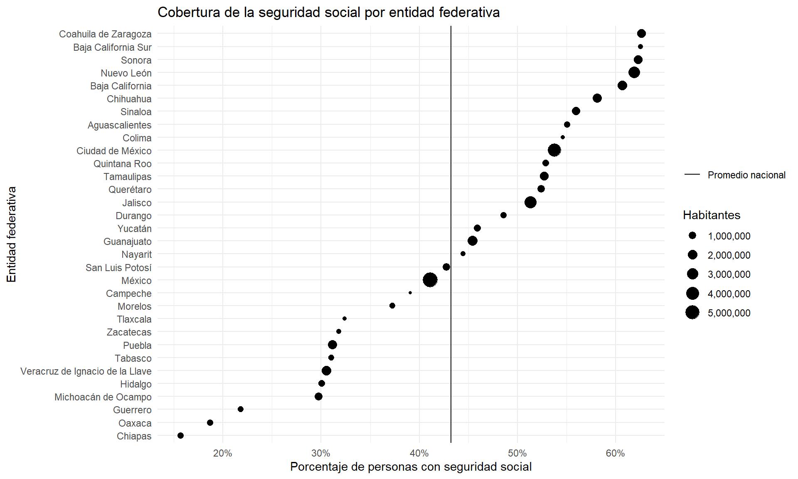

La Tarea 1 debe entregarse el jueves 27 de marzo. La entrega consiste en un archivo PDF que incluya las respuestas a las preguntas planteadas, así como el código .qmd que generó las respuestas. Para descargar el archivo .qmd, haz clic aquí.
Escribe todas tus respuestas en la sección de respuestas al final de este archivo.
Escribe tu nombre en el campo author del YAML.
1 Preguntas
1.1Outliers: Datos atípicos
Un problema común en el análisis de datos es cómo tratar con datos atípicos: aquellos valores que difieren significativamente del resto de los datos. Dos soluciones estándar son:
Truncar los datos: eliminando los datos atípicos
Winsorizar los datos: reemplazando los datos atípicos por un valor cercano a los valores no atípicos.
El siguiente código carga un vector llamado ingresos. Cada valor representa el ingreso en pesos para un hogar mexicano, de la encuesta de ingreso y gastos de los hogares (ENIGH) del 2022.
load("//IMSS-EDS/Users/esteban.degetau/OneDrive - INSTITUTO TECNOLOGICO AUTONOMO DE MEXICO/Documentos/My courses/Statistical tools in R/assignments/data/ingresos.rda")
¿Cuál es la longitud (length) del vector ingresos? (esto nos dirá el número de observaciones en los datos de la ENIGH.) ¿Cuál es la media, la mediana y la desviación estándar de ingresos?
Escribe una función para truncar un vector. Esta función debe tener dos argumentos: (1) el vector y (2) el percentil al que se truncará el vector por arriba y por abajo. La función deberá hacer lo siguiente:
Calcular los percentiles inferior y superior para truncar los datos.
Crear un subconjunto del vector original, incluyendo solo las observaciones que se encuentren entre los percentiles inferior y superior.
Regresar el subconjunto.
Pista: La función sort() regresa un vector ordenado de menor a mayor. Para extraer múltiples elementos de un vector, puedes usar la notación vector[1:10] para extraer los elementos 1 al 10.
Escribe una función para winsorizar un vector. Esta función deberá tener dos argumentos: (1) el vector y (2) el percentil al que se winzorizará el vector por arriba y por abajo. La función deberá hacer lo siguiente:
Calcular los percentiles inferior y superior para winzorizar los datos.
Crear un nuevo vector, reemplazando cualquier observación que sea menor al percentil inferior por el percentil inferior y cualquier observación que sea mayor al percentil superior por el percentil superior.
Regresar el vector con los valores atípicos reemplazados.
Pista: Puedes usar la notación vector[vector < 10] <- 10 para reemplazar los valores menores a 10 por 10.
Crea un vector truncado del vector ingresos, que trunque el 1% de los datos por arriba y por abajo. ¿Cuál es la longitud, media, mediana y desviación estándar del vector truncado? Compara el histograma de ingresos con el histograma del vector truncado.
Crea un vector winzorizado del vector ingresos, que winzorice el 1% de los datos por arriba y por abajo. ¿Cuál es la longitud, media, mediana y desviación estándar del vector winzorizado? Compara el histograma de ingresos con el histograma del vector winzorizado.
Discute tus resultados.
1.2 Seguridad social en la población
El siguiente código carga un conjunto de datos proveniente de la ENIGH 2022 llamado poblacion2022. Explotaremos este conjunto de datos para explorar qué tipo de personas tienen/carecen de seguridad social en México. Adicionalmente, el código genera un diccionario de datos que queda guardado como una tibble llamado dict. Puedes consultar el diccionario de datos llamando View(dict).
# Checar que pacman esté instaladoif (!require("pacman")) install.packages("pacman")
Loading required package: pacman
pacman::p_load(tidyverse, labelled)load("//IMSS-EDS/Users/esteban.degetau/OneDrive - INSTITUTO TECNOLOGICO AUTONOMO DE MEXICO/Documentos/My courses/Statistical tools in R/assignments/data/poblacion2022.RData")dict <-generate_dictionary(poblacion2022)
La ENIGH es una encuesta representativa a nivel estatal y nacional. La variable factor es un factor de expansión que nos permite hablar de la muestra encuestada como si fuese la población total. Si quisiéramos saber cuántas personas considera la ENIGH que habitan en México, podríamos sumar el factor de expansión de todas las observaciones:
La variable segsoc en poblacion2022 es una variable categórica que indica si una persona tiene o no tiene seguridad social. ¿Cuál es el porcentaje de personas en la población que tienen y no tienen seguridad social?
¿Qué porcentaje de hombres y mujeres tienen seguridad social? ¿Qué porcentaje de hombres y mujeres no tienen seguridad social?
Ahora queremos saber cuál es la escolaridad promedio para las personas con y sin seguridad social. Sin embargo, la información sobre escolaridad en la tabla poblacion2022 está codificada como factor en la variable nivelaprob. Con la siguiente tabla podemos convertir niveles escolares a años de escolaridad:
# A tibble: 11 × 2
nivelaprob escolaridad
<fct> <dbl>
1 Primaria 6
2 Preparatoria o bachillerato 12
3 Secundaria 9
4 Profesional 16
5 Maestría 18
6 Normal 14
7 Preescolar 1
8 Carrera técnica o comercial 14
9 <NA> NA
10 Ninguno 0
11 Doctorado 20
Usa la tabla escolaridad para calcular la escolaridad promedio de las personas con y sin seguridad social.
Usa ggplot2 para crear una (o varias) gráfica en donde explores las siguientes preguntas: ¿Cuál es el grado de cobertura de la seguridad social en México, por entidad federativa? ¿Qué entidad federativa tiene la mayor y la menor cobertura de seguridad social? ¿Qué entidades están por arriba y por abajo del promedio nacional de cobertura de seguridad social?
Discusión de resultados: La ventaja de truncar los valores es que no impone ningún cambio en la distribución de los datos. La desventaja es que pierde observaciones. Asimismo, la ventaja de winsorizar los datos es que no pierde observaciones. La desventaja es que impone cambios en la distribución de los datos.
Adicionalmente, nota que la mediana es mucho menos sensible a nuestro método de tratamiento de datos atípicos que la media.
`summarise()` has grouped output by 'segsoc'. You can override using the
`.groups` argument.
# A tibble: 4 × 4
# Groups: sexo [2]
segsoc sexo n percentage
<fct> <fct> <dbl> <dbl>
1 Sí Hombre 25177443 50.6
2 Sí Mujer 20348488 36.6
3 No Hombre 24602951 49.4
4 No Mujer 35183769 63.4
63 % de las mujeres no tiene seguridad social, mientras que solo 49 % de los hombres no tiene seguridad social.
Escolaridad promedio de las personas con y sin seguridad social:
# A tibble: 2 × 2
segsoc escolaridad_prom
<fct> <dbl>
1 Sí 11.6
2 No 8.99
Las personas con seguridad social tienen en promedio 11.6 años de escolaridad, mientras que las personas sin seguridad social tienen en promedio 8.9 años de escolaridad.
Gráfica de la cobertura de la seguridad social por entidad federativa:
`summarise()` has grouped output by 'entidad'. You can override using the
`.groups` argument.
promedio_nacional <- poblacion2022 |>group_by(segsoc) |>summarise(n =sum(factor)) |>ungroup() |>drop_na() |>mutate(percentage = n /sum(n)) |>filter(segsoc =="Sí") |>pull(percentage)entidades |>ggplot(aes(x =reorder(entidad, percentage), y = percentage)) +geom_point(aes(size = n)) +geom_hline(aes(yintercept = promedio_nacional, linetype ="Promedio nacional")) +coord_flip() +labs(x ="Entidad federativa",y ="Porcentaje de personas con seguridad social",title ="Cobertura de la seguridad social por entidad federativa",linetype ="" ) +scale_size_continuous(name ="Habitantes",labels = scales::comma ) +scale_y_continuous(labels = scales::percent) +theme_minimal()

La cobertura de seguridad social es una historia de contrastes. 50% de los hombres tienen cobertura, mientras que solo 37% de las mujeres tienen. La escolaridad promedio de las personas con seguridad social es de 11.6 años, mientras que la escolaridad promedio de las personas sin seguridad social es de 9.9 años. En Coahuila, cerca del 65% de la población tiene seguridad social, mientras que en Chiapas solo el 15%.
Hay mucho camino que recorrer para lograr una cobertura universal de la seguridad social en México.